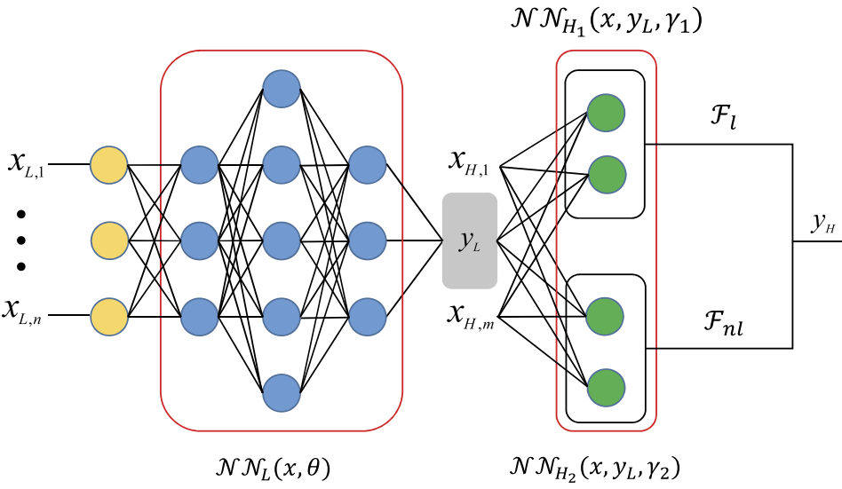
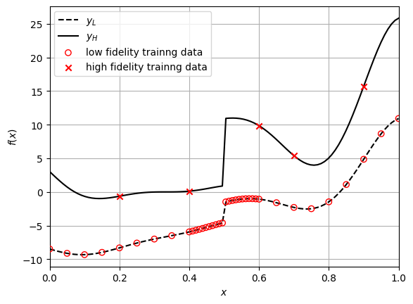
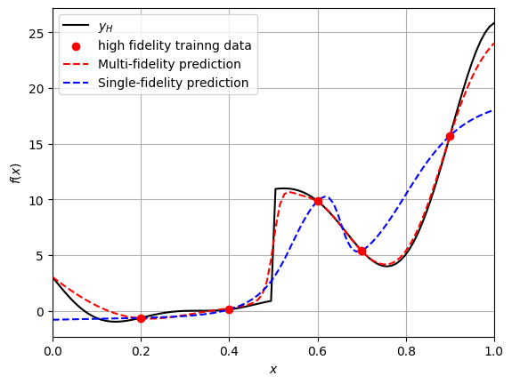

Multi-Fidelity Neural Networks#
This section provides implementation for concepts related to multi-fidelity neural network models. Make sure that you have downloaded and installed the latest release of the scimlstudio package before running the code in this section. Go through neural network section before you proceed further. In this section, we will be focusing on multi-fidelity neural network (MFNN) framework proposed by Meng and Karniadakis. This work proposes to learn the correlation between fidelities using a general function \(F\). Mathematically, the correlation is written as
where \(y_H\) and \(y_L\) represents high and low fidelity data, and \(\mathbf{x}\) denotes design variable vector. The function \(\mathcal{F}\) is further decomposed into two parts: linear and nonlinear correlation, and is written as
The \(\mathcal{F}_L\) and \(\mathcal{F}_{NL}\) denote linear and nonlinear correlation function, respectively. Both these functions are approximated using a neural network model. Additionally, the relation \(\mathbf{x}\) and \(y_L\) is also modeled using a neural network. These networks are arranged as shown in below schematic.
{kind=link}

As mentioned earlier, there are three sub-networks here:
\(\mathcal{NN}_L\): learns mapping between \(\mathbf{x}\) and \(y_L\)
\(\mathcal{NN}_{H_1}\): learns linear correlation between \(y_L\) and \(y_H\)
\(\mathcal{NN}_{H_2}\): learns nonlinear correlation between \(y_L\) and \(y_H\)
These three networks are trained together using a composite loss function, which is written as
The first and second term represents mean squared error (MSE) for the low- and high-fidelity data. The \(\Theta_L\), \(\Theta_{H_1}\), and \(\Theta_{H_2}\) represents trainable parameters for \(\mathcal{NN}_L\), \(\mathcal{NN}_{H_1}\), and \(\mathcal{NN}_{H_2}\), repsectively. The remaining terms are performing \(L_2\) regularization for the trainable parameters. The \(\lambda_L\), \(\lambda_{H_1}\), and \(\lambda_{H_2}\) represent regularization constant for each network.
The \(MSE_L\) is written as
where \(\hat{y}_L\) represents \(\mathcal{NN}_L\) and \(N_{y_L}\) is the number of low-fidelity training points. The \(MSE_H\) is written as
where \(N_{y_H}\) is the number of high-fidelity training points and \(\hat{y}_{H}\) is the high-fidelity output. As mentioned earlier, \(\hat{y}_{H}\) is the sum of linear and nonlinear correlation, and is written as
where \(\hat{y}_{H_1}\) and \(\hat{y}_{H_2}\) denotes \(\mathcal{NN}_{H_1}\) and \(\mathcal{NN}_{H_2}\), respectively.
NOTE: The design variables can be different for low and high-fidelity data. In this demonstration, it is assumed to be same, i.e., \(\mathbf{x}_L = \mathbf{x}_H = \mathbf{x}\).
The loss function \(\mathcal{L}\) can be minimized to obtain network parameters using standard optimizers like ADAM.
Toy problem#
To demonstrate MFNN, we will be using following function:
The \(y_L\) and \(y_H\) denotes low and high-fidelity function, respectively.
Following code block imports required functions:
import torch
import matplotlib.pyplot as plt
from scimlstudio.models import MultifidelityNeuralNetwork, FeedForwardNeuralNetwork
from scimlstudio.utils import Standardize, evaluate_scalar
device = torch.device('cuda' if torch.cuda.is_available() else 'cpu')
dtype = torch.float32
args = {
"device": device,
"dtype": dtype
}
Next block defines low and high fidelity functions:
def low_fidelity(x):
mask = x <= 0.5
y = 0.5*(6*x - 2)**2 * torch.sin(12*x - 4) + 10*(x - 0.5) - 5
y[~mask] = 3 + y[~mask]
return y
def high_fidelity(x):
mask = x <= 0.5
y = 2*low_fidelity(x) - 20*x + 20
y[~mask] = 4 + y[~mask]
return y
Training and testing data#
Next block defines training and testing data. Note that here we are also using testing data for plotting the function.
# low fidelity training data
x_train_lf = torch.cat((torch.linspace(0, 0.35, 8), torch.linspace(0.4, 0.6, 22), torch.linspace(0.65, 1.0, 8)), axis=0).to(**args).reshape(-1,1)
y_train_lf = low_fidelity(x_train_lf)
# high fidelity training data
x_train_hf = torch.tensor([0.2, 0.4, 0.6, 0.7, 0.9], **args).reshape(-1,1)
y_train_hf = high_fidelity(x_train_hf)
# testing data
x_test = torch.linspace(0, 1, 100, **args).reshape(-1,1)
y_test_lf = low_fidelity(x_test)
y_test_hf = high_fidelity(x_test)
Below code block plots the function, along with the training points:
# true function
plt.plot(x_test.numpy(force=True), y_test_lf.numpy(force=True), "k--", label="$y_L$")
plt.plot(x_test.numpy(force=True), y_test_hf.numpy(force=True), "k-", label="$y_H$")
# training data
plt.scatter(x_train_lf.numpy(force=True), y_train_lf.numpy(force=True), marker="o", edgecolors="r", facecolors="None", label="low fidelity trainng data", zorder=10)
plt.scatter(x_train_hf.numpy(force=True), y_train_hf.numpy(force=True), c="r", marker="x", label="high fidelity trainng data", zorder=10)
# asthetics
plt.xlabel("$x$")
plt.ylabel("$f(x)$")
plt.xlim(left=0.0, right=1.0)
plt.grid()
_ = plt.legend()

Note the number of training points in each fidelity and how it is distributed. There are only five high-fidelity points, while there are 38 low-fidelity points. Moreover, the low-fidelity points are densely populated around the discountinuity, which will enable the model to learn this nonlinearity.
Define MFNN model#
We will use MultiFidelityNeuralNetwork class from scimlstudio package for creating MFNN. This class is similar to FeedForwardNeuralNetwork but with some modifications. You need to provide following arguments during initialization:
x_train_lf: a 2D torch tensor representing input training data for low-fidelityy_train_lf: a 2D torch tensor representing output training data for low-fidelityx_train_hf: a 2D torch tensor representing input training data for high-fidelityy_train_hf: a 2D torch tensor representing output training data for high-fidelitynetwork_lf: an instance of Sequential class defining the neural network model architecture for modeling low-fidelity data, i.e., \(\mathcal{NN}_L\)network_linear_corr: an instance of Sequential class defining the neural network model architecture for modeling linear correlation, i.e., \(\mathcal{NN}_{H_1}\)network_nonlinear_corr: an instance of Sequential class defining the neural network model architecture for modeling nonlinear correlation, i.e., \(\mathcal{NN}_{H_2}\)input_transform: an instance of Normalize or Standardize class used for input scaling, default = Noneoutput_transform_lf: an instance of Normalize or Standardize class used for output scaling of low-fidelity data, default = Noneoutput_transform_hf: an instance of Normalize or Standardize class used for output scaling of high-fidelity data, default = None
First, let’s define network architectures using the Sequential class. This is similar to neural networks section, refer to that section for more details. Below code block defines these networks, initializes the weights, and creates input, output transformation objects.
# Weights initialization
def weights_init(m):
if isinstance(m, torch.nn.Linear):
torch.nn.init.xavier_uniform_(m.weight.data)
# low-fidelity network
network_lf = torch.nn.Sequential(
torch.nn.Linear(x_train_lf.shape[1], 128),
torch.nn.Tanh(),
torch.nn.Linear(128, 128),
torch.nn.Tanh(),
torch.nn.Linear(128, y_train_lf.shape[1])
).to(**args)
network_lf.apply(weights_init)
# linear correlation network
network_linear_corr = torch.nn.Sequential(
torch.nn.Linear(x_train_hf.shape[1] + y_train_lf.shape[1], 64),
torch.nn.Linear(64, 64),
torch.nn.Linear(64, y_train_hf.shape[1])
).to(**args)
network_linear_corr.apply(weights_init)
# nonlinear correlation network
network_nonlinear_corr = torch.nn.Sequential(
torch.nn.Linear(x_train_hf.shape[1] + y_train_lf.shape[1], 64),
torch.nn.Tanh(),
torch.nn.Linear(64, 64),
torch.nn.Tanh(),
torch.nn.Linear(64, y_train_hf.shape[1])
).to(**args)
network_nonlinear_corr.apply(weights_init)
# transforms
input_transform = Standardize(torch.vstack((x_train_lf, x_train_hf)))
output_transform_lf = Standardize(y_train_lf)
output_transform_hf = Standardize(y_train_hf)
# initialize mf model
mf_model = MultifidelityNeuralNetwork(
x_train_lf=x_train_lf,
y_train_lf=y_train_lf,
x_train_hf=x_train_hf,
y_train_hf=y_train_hf,
network_lf=network_lf,
network_linear_corr=network_linear_corr,
network_nonlinear_corr=network_nonlinear_corr,
input_transform=input_transform,
output_transform_lf=output_transform_lf,
output_transform_hf=output_transform_hf
)
NOTE: The \(\mathcal{NN}_{H_1}\) should not contain any nonlinear activation function since it is modeling a linear relation.
Train MFNN model#
Now, we can train the networks using the fit method from the MultiFidelityNeuralNetwork class object created in previous code block. This method takes following arguments:
optimizer: an object from torch.optim module to optimize the network parametersepochs: number of epochs to train the network, default = 100reg_const_lf: regularization constant for low fidelity network \(\mathcal{NN}_L\), default = 1e-4reg_const_linear: regularization constant for linear correlation network \(\mathcal{NN}_{H_1}\), default = 0.0reg_const_nonlinear: regularization constant for nonlinear correlation network \(\mathcal{NN}_{H_2}\), default = 1e-3
Below code block defines these arguments and trains the model. Refer to neural networks section for more details about how to define optimizer. Note that the loss function is internally defined.
optimizer = torch.optim.Adam(mf_model.parameters, lr=1e-3)
mf_model.fit(
optimizer=optimizer,
epochs=1000,
reg_const_lf=1e-4,
reg_const_linear=0.0,
reg_const_nonlinear=1e-3
)
Predict#
Once networks are trained, we can do predictions using it. You can use predict method from the MultiFidelityNeuralNetwork class object for doing predictions. Note that the values returned by the predict method are high-fidelity predictions. Below code evaluates network on the testing data:
y_test_mf_pred = mf_model.predict(x_test.reshape(-1,1))
DNN through HF data#
For comparison, we are also creating a fully-connected neural network model through the high-fidelity data. This will allow us to see the advantage of using multi-fidelity models.
network_hf = torch.nn.Sequential(
torch.nn.Linear(x_train_hf.shape[1], 64),
torch.nn.Tanh(),
torch.nn.Linear(64, 64),
torch.nn.Tanh(),
torch.nn.Linear(64, 64),
torch.nn.Tanh(),
torch.nn.Linear(64, 1),
).to(**args)
# initial weights
network_hf.apply(weights_init)
# initialize the model class
sf_model = FeedForwardNeuralNetwork(
x_train_hf,
y_train_hf,
network_hf,
Standardize(x_train_hf),
Standardize(y_train_hf)
)
optimizer = torch.optim.Adam(sf_model.parameters, lr=0.01) # adam optimizer
loss_func = torch.nn.MSELoss() # mean squared error loss function
# since the training data is small, we are using entire data
batch_size = x_train_hf.shape[0]
epochs = 500 # number of epochs
sf_model.fit(optimizer, loss_func, batch_size,epochs) # call the fit method
y_test_sf_pred = sf_model.predict(x_test.reshape(-1,1)) # predict
Comparison plot#
fig, ax = plt.subplots()
# true function
plt.plot(x_test.numpy(force=True), y_test_hf.numpy(force=True), "k-", label="$y_H$")
# HF training data
plt.scatter(x_train_hf.numpy(force=True), y_train_hf.numpy(force=True), c="r", marker="o", label="high fidelity trainng data", zorder=10)
# predictions
plt.plot(x_test.numpy(force=True), y_test_mf_pred.numpy(force=True), "r--", label="Multi-fidelity prediction")
plt.plot(x_test.numpy(force=True), y_test_sf_pred.numpy(force=True), "b--", label="Single-fidelity prediction")
# asthetics
plt.xlabel("$x$")
plt.ylabel("$f(x)$")
plt.xlim(left=0.0, right=1.0)
plt.grid()
_ = plt.legend()

Note that a single NN model through the high-fidelity data is not able to learn the underlying function since the number of points is less. However, the multi-fidelity model is able to approximate the true high-fidelity function with large number of low-fidelity points, along with small number of high-fidelity points.